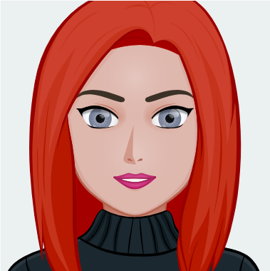
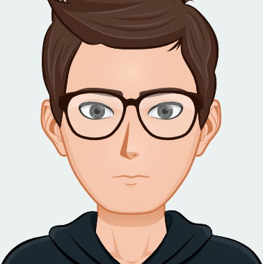

Hayley ter Linden
Hayley is the Project Manager for DownTown Media. Hayley went to Butler County Area Vocational-Technical School for Advertising Design for 2 years, where she got her certificate. She graduated from Pittsburgh Technical College. Hayley has a background in both design and development, which enables her to efficiently help her team when needed. She has worked on websites for Moon-Prance Film Fest and Custom Kicks by Kandi to mention a few. She enjoys helping businesses create their own unique websites. She also believes that using the web is of the utmost importance in growing one’s business.

Jacob Kanaskie
Jacob is a Developer at DownTown Media. Jacob’s background and college
education allowed him to develop a strong knowledge in HTML, CSS, JavaScript, and
PHP. He likes how he can make a solid responsive page structure and help it be built
from there. He encourages everyone he can to become a developer because one’s
knowledge of the ever-growing web is vital to helping the world become something
greater.
RJ Jewell
RJ is Developer for DownTown Media, from Wheeling, West Virginia. He went to West Virginia Northern and is currently going to Pittsburgh Technical College. It was at West Virginia Northern that RJ got interested in web. However, after a while, RJ became really interested in the class. The concept of a single piece of code doing a lot inspired him and made him want to pursue a web career. RJ likes to code using JavaScript, HTML, and CSS. Projects RJ has worked on include websites for the Armed Forces Expo, TixMeister Ordering Page and “ORDER UP PICK UP” website for mobile phones.
Jon Chase
Jon is the Designer for the company DownTown Media. Jon has a background in web that includes two years as a designer and has worked with the Adonis Sequence. Jon made a project with the team called Adonis Sequence. The project that team and Jon work on was the mountaineerflyers.org. Jon also made a project named Warren City of Cars. He believes that his mission in life is to ensure that each client’s website provides a positive user experience and helps the business to grow